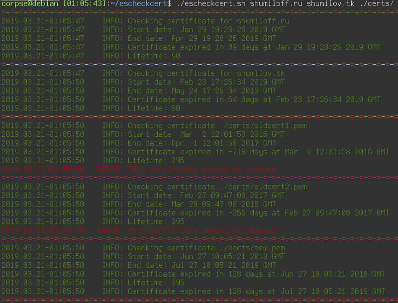

Про весеннее обострение

Этой весной столько всего приключилось и накопилось, что на ведение блога просто не хватало сил и времени. Постараюсь исправить это упущение и вывалю всё скопом. Скажу сразу, под обострением я в данном случае имею в виду обострение моего желания изменений, стремления к чему-то новому и избавление от чего-то старого.
Теги: жизненное, 3d-printing, moto, keyboards, smarthome
Про векторную графику и консерватизм

Давным-давно, в 97-м или 98-м году я окончил курсы по Corel Draw, тогда ещё седьмой версии. Я тогда не думал о том, где и зачем мне это может понадобиться, мне тогда просто нравилась сама концепция векторной графики. Что удивительно, знания эти мне пригодились и не раз.
Теги: instruments, graphics
Правильное отключение SWAP раздела в Linux Mint
До того, как я купил себе ноутбук, я предварительно искал информацию о том, с какими проблемами мне придётся столкнуться при установке линукса. Судя по тому, что я нашёл, мне светило пропатчить модуль ядра для того, чтобы заработал тачпад и собрать модуль драйвера Wi-Fi из исходников. Это конечно, совершенно не rocket science, но со временем начинаешь ценить время и удобство, хочется побольше вещей, которые просто работают, работают хорошо и из коробки.
Последние лет шесть я работал на самосборном дистрибутиве на базе debian. И всё было бы ничего, но поддержка этого дистрибутива в актуальном состоянии требовала периодических усилий и существенных затрат времени. Так как debian stable имеет далеко не самую свежую пакетную базу, то заморочек с железом ожидалось больше, чем обычно. Так как у меня уже был положительный опыт установки Linux Mint, я взял последнюю версию 19.1 Tara с xfce4, накатил на ноутбук и - о чудо - всё заработало. Абсолютно всё - тачпад, звук, wi-fi, видео. При всём этом установка заняла в общей сложности всего минут пять.
Мука выбора ноутбука
Я всегда был за минимализм и адекватность выбора инструмента по отношению к решаемым с помощью этого инструмента задачам. Если можно для чего-то безболезненно использовать меньше ресурсов, то зачем приобретать их больше? В булочную, расположенную в паре кварталов, можно теоретически ездить за хлебом на карьерном самосвале, на болиде формулы 1 или летать на вертолёте, но куда правильнее будет сходить туда пешком или в крайнем случае взять самокат, даже если ты можешь себе позволить приобрести вертолёт.
Ноутбук, на котором я работал последние два года и который служил мне верой и правдой, был куплен мной на распродаже gearbest примерно за 12 с небольшим тысяч рублей и за эти деньги он был прекрасен. Тонкие рамки, пассивное охлаждение, матовый FHD экран, прекрасная удобная клавиатура, неплохой тачпад и свободный слот M.2 под SSD форм фактора 2242. Согласитесь, за 12 тысяч рублей это очень неплохо! И самое главное - его возможности вполне соответствовали задачам, которые я с его помощью решал за одним небольшим исключением - мне не всегда хватало 4gb оперативной памяти, плюс недавно произошло событие, которое меня подтолкнуло к поиску замены.
Теги: hardware
Скрипт для проверки времени протухания сертификатов

На работе понадобилось отслеживать время протухания различных сертификатов и слать алерты в случае, если до истечения осталось менее, чем N дней. Быстро накидал скрипт, а потом решил расширить его функционал таким образом, чтобы он сам находил все сертификаты в директории и выдавал даты выдачи и истечения срока действия сертификата, время жизни и количество дней, в течение которых сертификат остаётся валидным. В случае, если хотя бы один из сертификатов оказывается невалидным, возвращается ненулевой код возврата, в результате чего можно удобно использовать скрипт для отправки алертов.
if! expired=`./escheckcert.sh domain1.com domain2.com`; then
echo "$expired" | mail -s "Expired certs" admin@domain.com
fiТак же можно помимо файлов сертификатов и путей директорий, содержащих сертификаты, использовать непосредственно доменные имена. Имена файлов, директорий и доменов можно передавать скрипту вперемешку, разделяя пробелами.
Причесал код, выложил на github, доволен. И на работе задачу выполнил и для себя давно подобную утилиту хотел и пост в блог получился.
Про бюрократию, дохлых мышей, инвентаризадницу и админскую магию
Внезапно вспомнился период мой работы в конторе под названием КЭС-Прикамье, это было примерно лет десять тому назад и это была одна из самых бюрократических контор, которые мне удалось повидать в своей жизни. Одним из самых ярких примеров бюрократии была процедура заказа оборудования. Например, у Ивана Ивановича на рабочем месте сдохла компьютерная мышь. Далее начинается целый процесс, в который вовлечено множество людей и который влечёт за собой километры, набеганные по коридору.
Про запись подкастов, оборудование и ошибки начинающего

Вы когда-нибудь задумывались о том, насколько хорошо вы владеете собственными речью и голосом? Я раньше не особо, но когда я слышал свой голос на записи, мне он абсолютно не нравился. Совершенно. Возможно дело в том, что я всю свою жизнь картавлю, но довольно успешно маскирую своё неумение говорить букву "Р", имитируя её при помощи голосовых связок, а не движения языка. В принципе, я могу произнести любое слово одновременно с непрерывающейся картавой буквой "Р" - такая вот суперспособность сомнительной полезности. А ещё после участия в подкастах я начал слышать то, чего никогда не слышал или не замечал раньше.
Про беспроводные клавиатуры от Apple

Ещё несколько слов о магии Apple, о которой многие любят рассказывать. Есть есть такая замечательная клавиатура - Apple Magic Keyboard. Работает через Bluetooth, использует батарейки или аккумуляторы AA, многим очень нравится и стоит на текущий момент в среднем от семи до девяти тысяч рублей. То, что просто положить их на полку и забыть о них на пару лет нельзя, я уже рассказывал в конце вот этого поста. Там для того, чтобы извлечь из новой, но неиспользовавшейся какое-то время клавиатуры батарейки, пришлось её сверлить. После экзекуций на клавиатуре перестали работать несколько клавиш. Покажите мне клавиатуру другого производителя, которая была бы оснащена подобной "функцией"! По-моему, только у apple новая клавиатура за 7+ тысяч рублей может выйти из строя, просто лёжа на полке. Я прямо восхищаюсь этой компанией! И это тоже не одиночный случай. Вот, недавно натолкнулся ещё на одну статью на хабре, описывающую ту же самую проблему: https://habr.com/ru/post/379771/. На этот раз сверлили и распиливали клавиатуру более удачно - она осталась жива. Конечно, это проблема скорее источников питания, чем клавиатуры как таковой. Но у меня подобные проблемы с батарейками возникали и в других клавиатурах. Там же достаточно было лёгким движением руки открыть крышку батарейного отсека, достать батареи и хорошо почистить контакты. Мне совершенно не нужны были для этих действий ножовка по металлу, молоток, отвёртка и дрель. Хотел пошутить про то, что для смены батареи или памяти в макбуке наверное скоро придётся пользоваться кувалдой и перфоратором, но вовремя вспомнил, что для этого теперь нужна паяльная станция, набор инструментов и неплохие навыки пайки мелких компонентов, хотя не уверен, что и это поможет - память теперь распаяна на плате и если вы хотите добавить или сменить память, вам нужно приобрести новый ноутбук. Замена батареи - тоже квест - банки залиты термоклеем. При неправильном прогреве для смены аккумуляторов можно довольно легко вывести макбук из строя.
Теги: mac, hardware, keyboards
Выпуск подкаста с моим участием по теме троичной логики и троичных компьютеров

Пару недель назад я принял участие в подкасте "Опытные на кухне". Я просто оставлю тут ссылку на выпуск.
Очистка старых смерженных веток в удалённом git репозитории

Не так давно по работе я столкнулся с задачей - необходимо было очистить большой репозиторий на гитхабе от всех веток, которые были полностью смержены в мастер, позднее, чем N дней. Для этого пришлось написать небольшой скрипт, который я просто оставлю ниже.
Теги: админское, shell, automatization